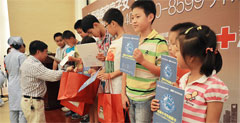

《东方卫视》各大媒体报道助残子女"健康小书包"公益活动
2014年9月27日，"宅医送"全国公益联盟携上海新科医院为兴家残疾人子女义务辅导学校松江分校的30户残障家庭送去关爱，同时发起上海残疾家庭子女"健康小书包"公益行动，并免费向残障家庭提供健康咨询、健康检查、心理疏导、疾病治疗减免、送医上门等服务。
《东方卫视》各大媒体报道助残子女"健康小书包"公益活动
- 

新科医院为兴家残疾人子女义务学校提供医疗服务项目
活动时间： 2014年10月15日~2014年11月15日
- 内科检查心率检查、心音检查、肝脾检查
- 外科检查脊柱检查、四肢检查、关节检查、甲状腺检查、疝（shàn）检查
- B超检查B超肝检、B超胆检、B超脾检、B超胰检及双肾检查
- 心电图检查心脏的检测与定位
- 中医检查望闻问切
- 化验检查乙肝五项检查、血糖/血脂检查、血型检查、18项血常规检查和10项尿常规检查
- 治疗项目医院对所有无医保学生家庭给予治疗费用30%补贴
目前残疾人家庭面临几大问题
因为残疾人就业难，家庭的经济收入较少而开支却较多
由于残疾人存在着各种行动方面的障碍，他们中又有许多人长期与父母、兄弟姐妹生活在 一起，残疾人的居室空间常较狭小。
不仅残疾人本身在婚姻恋爱方面困难重重，而且直接影响到残疾儿童的丧偶父母再婚和残疾人的兄弟姐妹择偶。
残疾人家庭在成员患病时，大都面临着比健全人家庭更大的困难。

陈志勇院长
为残障人士家庭做健康医疗服务，和一般医疗检查不同。有不少难度都需要我们医护人员克服，甚至是边学边做，所以，我们更期待有更多的从医人员来关注和参与这项公益活动，大家相互取长补短，共同推进助残事业。
解放日报：实现"兴家"之梦需要知识更要有健康的身心
为残疾家庭子女送"健康小书包"
- 人民网：让残疾家庭子女背上"健康小书包"
- 新华网："健康小书包"走进残障家庭 助圆孩子兴家梦
- 解放网：实现"兴家"之梦需要知识更要有健康的身心 ，为残疾家庭子女送"健康小书包"
- 东方网：让残疾家庭子女背上"健康小书包"
- 网易新闻：残疾家庭子女送"健康小书包"
- 新浪新闻：为残疾家庭子女送"健康小书包"
- 和讯新闻：为残疾家庭子女送"健康小书包"
- 搜狐：为残疾家庭子女送"健康小书包"
- 中国教育新闻网：房金妹：为残疾家庭子女送"健康小书包"
- 上海新闻网：为残疾家庭子女送"健康小书包"
- 人民网：让残疾家庭子女背上"健康小书包"
- 上海热线：实现"兴家"之梦 让残疾家庭子女背上"健康小书包"
- 光明网：为残疾家庭子女送"健康小书包"
- 上青网："健康小书包"走进残障家庭
- 上海慈善网：实现"兴家"之梦需要知识更要有健康的身心
- 汉丰网："健康小书包"走进残障家庭
- 华龙网：让残疾家庭子女背上"健康小书包"
- 天津网：为残疾家庭子女送"健康小书包"
- 爱陕西新闻网：为残疾家庭子女送"健康小书包"
- 博才网：为残疾家庭子女送"健康小书包"
- 贵阳网：让残疾家庭子女背上"健康小书包"
- 21CN新闻：让残疾家庭子女背上"健康小书包"
- 惠山新闻网：为残疾家庭子女送"降小书包"
- E都市：实现"兴家"之梦 让残疾家庭子女背上"健康小书包"